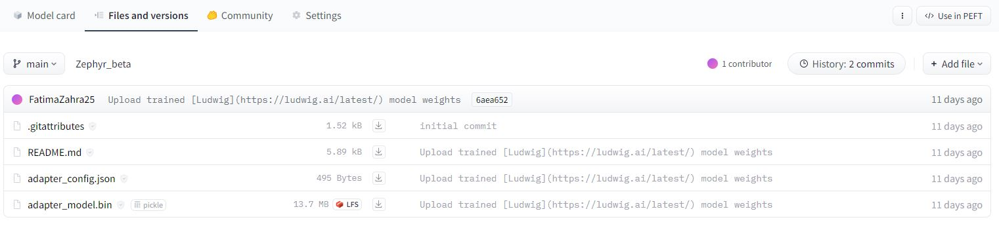

How to load an adapter and attach it to the model (GPU)
To enhance the capabilities of your model, you can load pre-trained adapters and attach them. This process involves loading the adapter, previously pushed to the Hugging Face Model Hub, and then attaching it to your existing model. Follow these steps to achieve this integration:
1. Install Required Packages
Before proceeding, make sure to install the necessary Python packages. Open your terminal, command prompt, or a code cell in your preferred environment (e.g., Jupyter Notebook, Google Colab) and run the following commands:
!pip install peft
!pip install bitsandbytes
!pip install transformers
!pip install accelerate
This ensures that you have the required dependencies installed.
2. Load and Configure the Model
Note
Before loading the adapter, ensure the model is loaded. If it’s already loaded, proceed to the next stage. If not, execute the following Python code:
import bitsandbytes as bnb
import transformers
import torch
from peft import (
LoraConfig,
PeftConfig,
PeftModel,
get_peft_model,
prepare_model_for_kbit_training
)
from transformers import (
AutoConfig,
AutoModelForCausalLM,
AutoTokenizer,
BitsAndBytesConfig
)
model_name = "alexsherstinsky/Mistral-7B-v0.1-sharded" # This model is just an example. You can use any model you want from the Hugging Face Model Hub.
bnb_config = BitsAndBytesConfig(
load_in_4bit=True,
bnb_4bit_use_double_quant=True,
bnb_4bit_quant_type="nf4",
bnb_4bit_compute_dtype=torch.bfloat16
)
model = AutoModelForCausalLM.from_pretrained(
model_name,
device_map="auto",
trust_remote_code=True,
quantization_config=bnb_config
)
tokenizer = AutoTokenizer.from_pretrained(model_name)
tokenizer.pad_token = tokenizer.eos_token
The following code defines a prompt generating a response based on a given instruction and input. (It’s just an example).
instruction = "Create a function to calculate the sum of a sequence of integers."
input = "[1, 2, 3, 4, 5]"
prompt = f"""Below is an instruction that describes a task. Write a response that appropriately completes the request.
### Instruction: {instruction}
### Input: {input}
### Response:
"""
encodeds = tokenizer(prompt, return_tensors="pt", add_special_tokens=False)
model_inputs = encodeds.to("cuda")
3. Load adapters with 🤗 PEFT
Parameter-Efficient Fine Tuning (PEFT) methods freeze the pretrained model parameters during fine-tuning and add a small number of trainable parameters (the adapters) on top of it. The adapters are trained to learn task-specific information.
To load and use a PEFT adapter model from 🤗 Transformers, make sure the Hub repository or local directory contains an adapter_config.json file and the adapter weights, as shown in the example image above.
Then you can load the PEFT adapter model using the code below:
peft_model_id = "FatimaZahra25/Zephyr_beta"
model.load_adapter(peft_model_id)
Enable and Disable the Adapter
Once you’ve added an adapter to a model, you can enable or disable the adapter module. To enable the adapter module:
model.enable_adapters()
generated_ids = model.generate(**model_inputs, max_new_tokens=1000, do_sample=True)
decoded = tokenizer.batch_decode(generated_ids)
print(decoded[0])
To disable the adapter module:
model.disable_adapters()
Attention
The adapter functionality currently utilizes GPU memory.